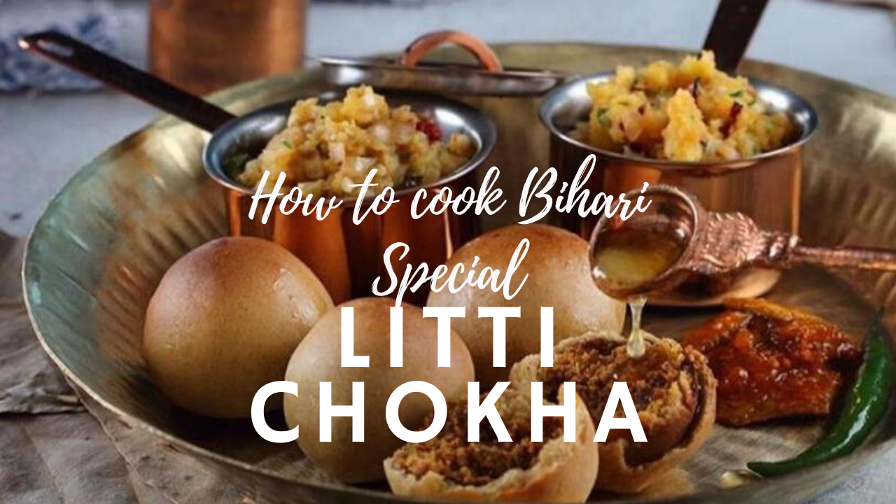
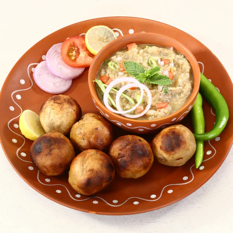
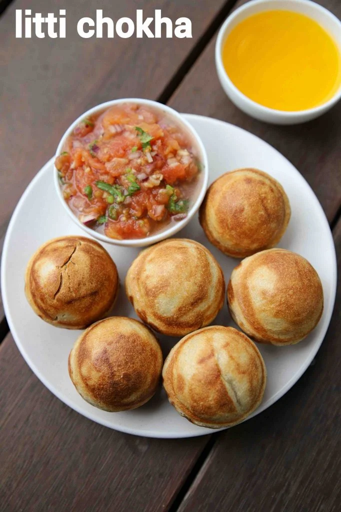

🥗 Vegetarian | Main Course
A traditional Bihari dish with smoky flavors and rustic charm

Litti Chokha is a famous traditional dish from Bihar and Jharkhand. Litti consists of baked wheat balls stuffed with spiced sattu, while chokha is a smoky mashed vegetable mix made from roasted tomatoes, potatoes, or eggplant. It is nutritious, flavorful, and deeply rooted in Indian food culture.


Store leftover litti and chokha separately in airtight containers for up to 2 days. Reheat litti in oven or pan before serving.
Calories: 350 kcal | Carbohydrates: 45g | Protein: 10g | Fat: 12g
Disclaimer: Values are approximate.Have a recipe request or feedback? Let me know!